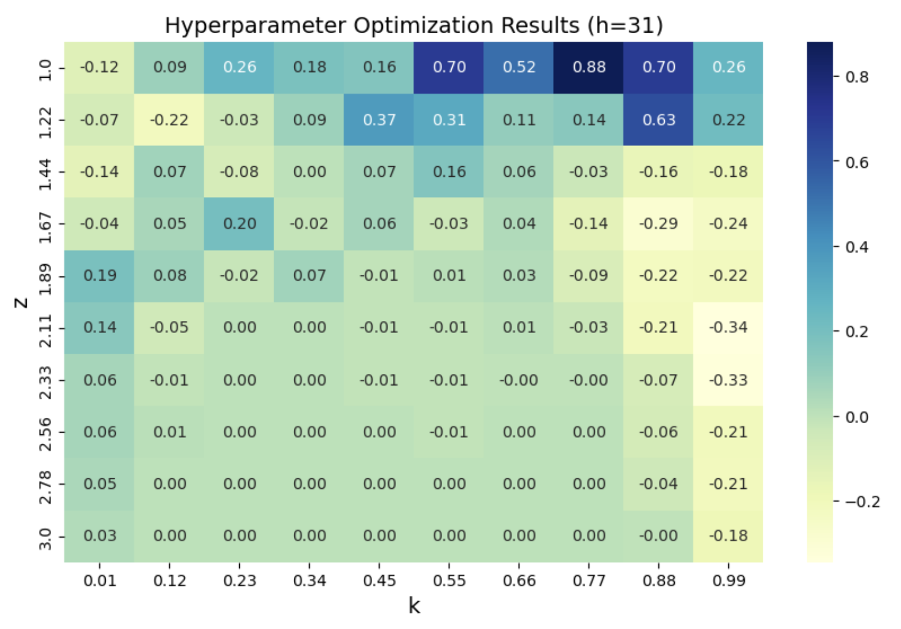
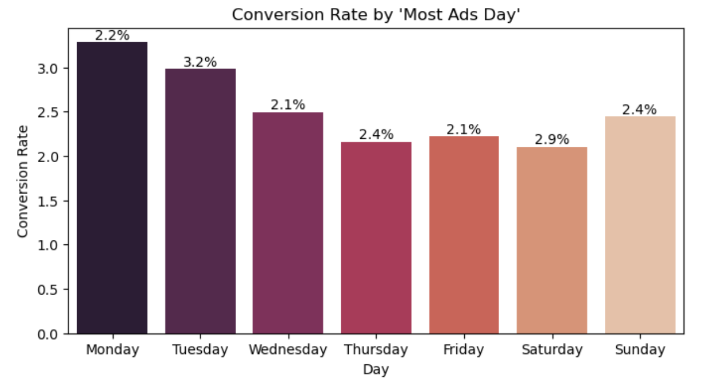
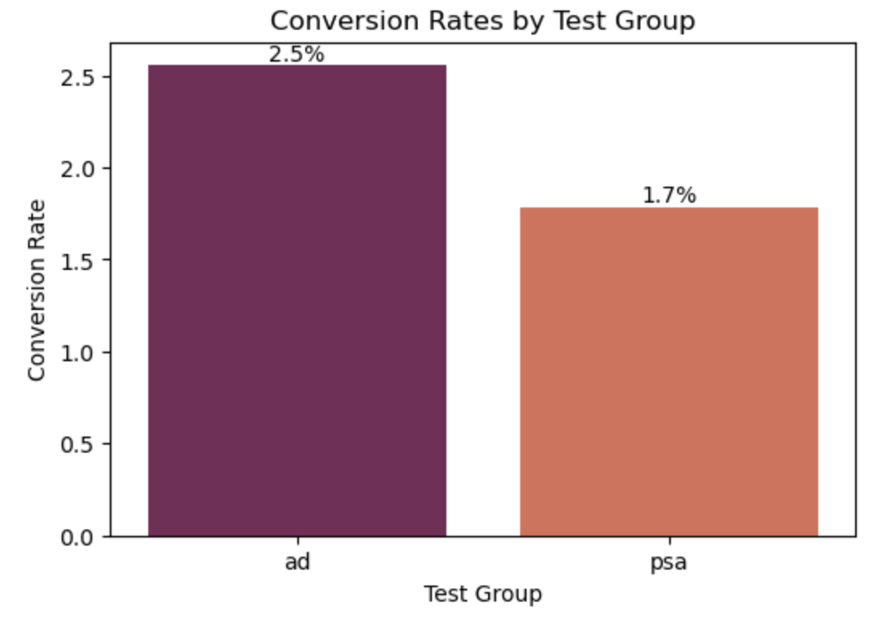
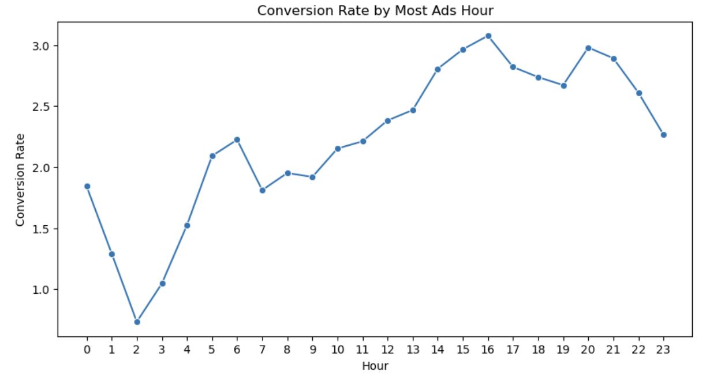

Projects
Data Science, Machine Learning, and NLP projects showcasing end-to-end implementations from research to deployment.
Sentiment Analysis - Forex Trading Strategy
Developed a Forex trading strategy by conducting sentiment analysis on economic news extracted using the NY Times API, spanning 2003 to 2024, using advanced NLP techniques and machine learning algorithms. The strategy was optimized through backtesting and hyperparameter tuning, ultimately achieving a 1.4% annualized return, thereby outperforming the HFRI Currency Index.
View on GitHub →


Marketing Analysis - A/B Testing Project
Conducted a detailed marketing analysis using A/B testing to measure the effectiveness of different marketing strategies. Analyzed customer engagement metrics to optimize campaign performance. The results revealed a significant 15% increase in conversion rates for the optimized strategy, driving overall business growth.
View on GitHub →


ML-Powered Delta Hedging Platform
Built an automated cryptocurrency trading system for Wave Digital Assets that generates option-like returns without the complexity and risk of traditional options trading. Used machine learning to predict market volatility and designed smart rebalancing strategies that reduced unnecessary trades by 15-20%. Led a team to develop automated pipelines that process live market data and maintain optimal portfolio positions, successfully eliminating counterparty dependencies while delivering consistent returns.
Deep NLP - Hate Speech Recognition
Developed a machine learning model to detect hateful and offensive speech on social media platforms, specifically analyzing tweets from the 2020 US Elections. Using BERT, a natural language processing model, the project integrates both textual content and contextual stances towards political figures to classify tweets as either hateful or non-hateful, aiming to enhance content moderation by improving the detection accuracy of harmful online behavior.
View on Colab →Campaign Performance Analysis Using SQL
Executed SQL analysis on 100K+ transactions using Snowflake CTEs and window functions, building dynamic dashboards in Looker Studio to visualize campaign KPIs and support revenue strategy.
Cloud-Based Web Scraping & ML Automation
Developed a serverless data pipeline using Google Cloud Functions to automate web scraping, data processing, and model inference. Built a machine learning model to predict insurance charges, web scraping data with BeautifulSoup and Scrapy, enabling scheduled real-time predictions via Google Cloud Scheduler.